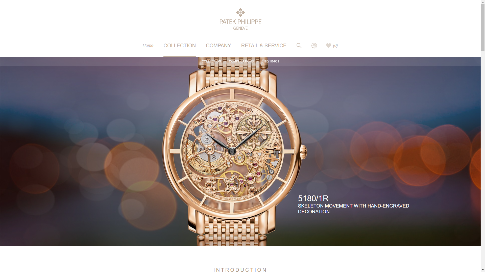
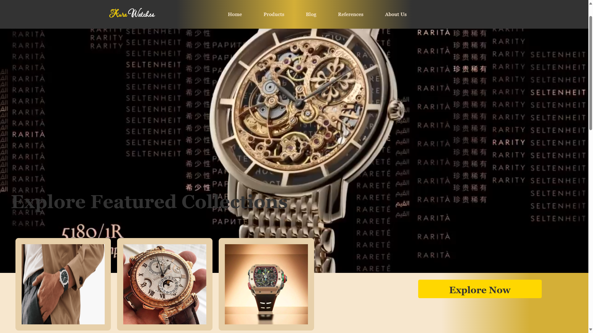
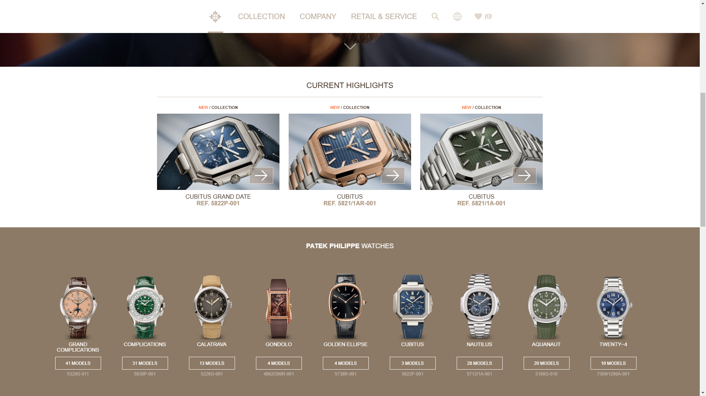
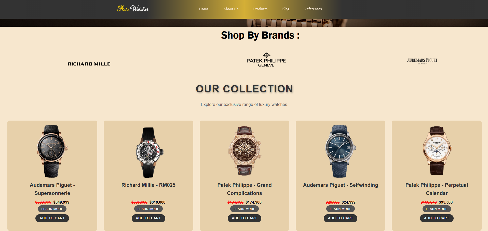
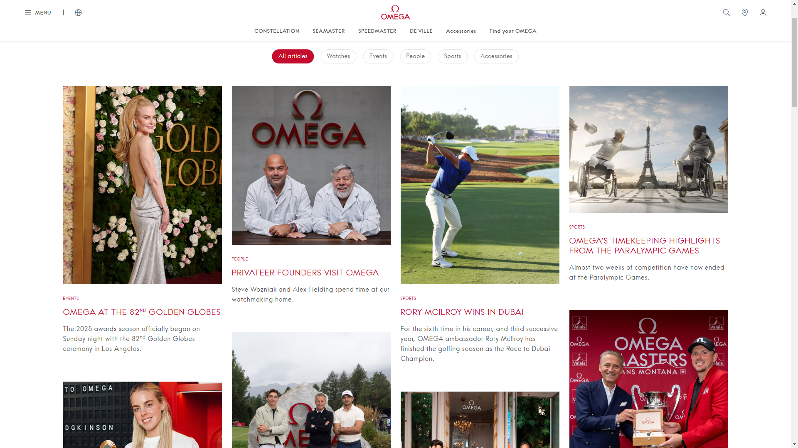
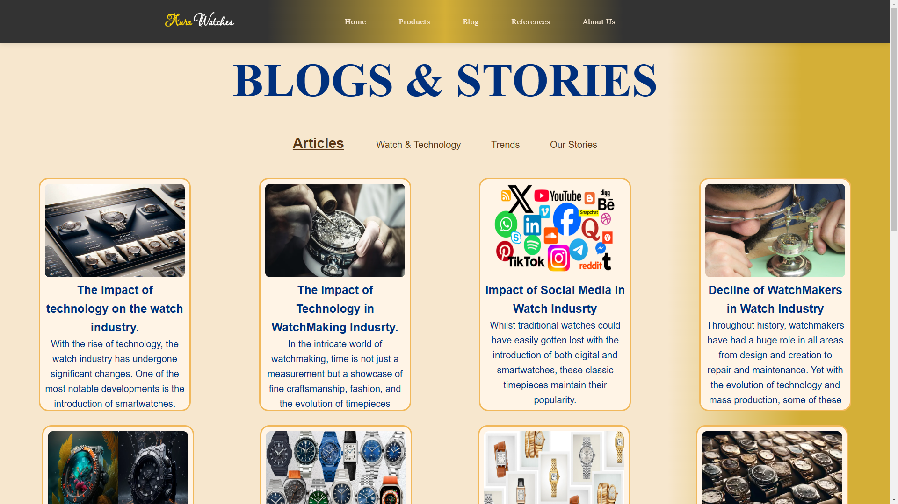
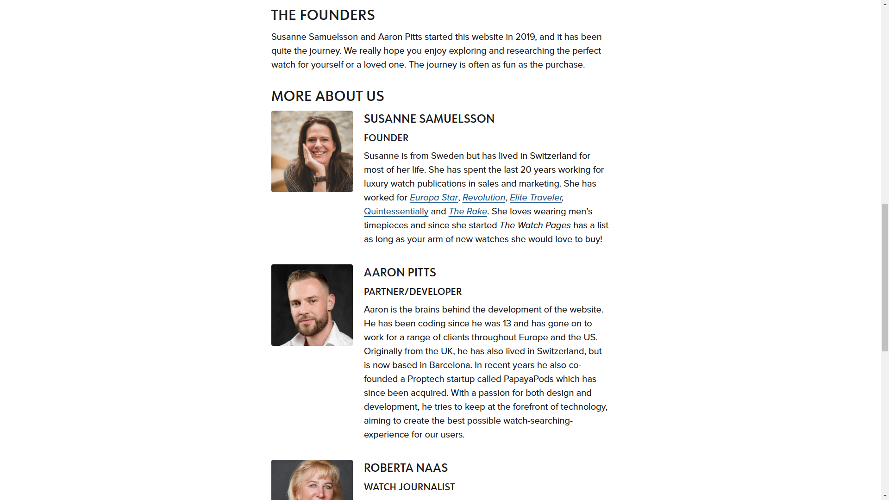
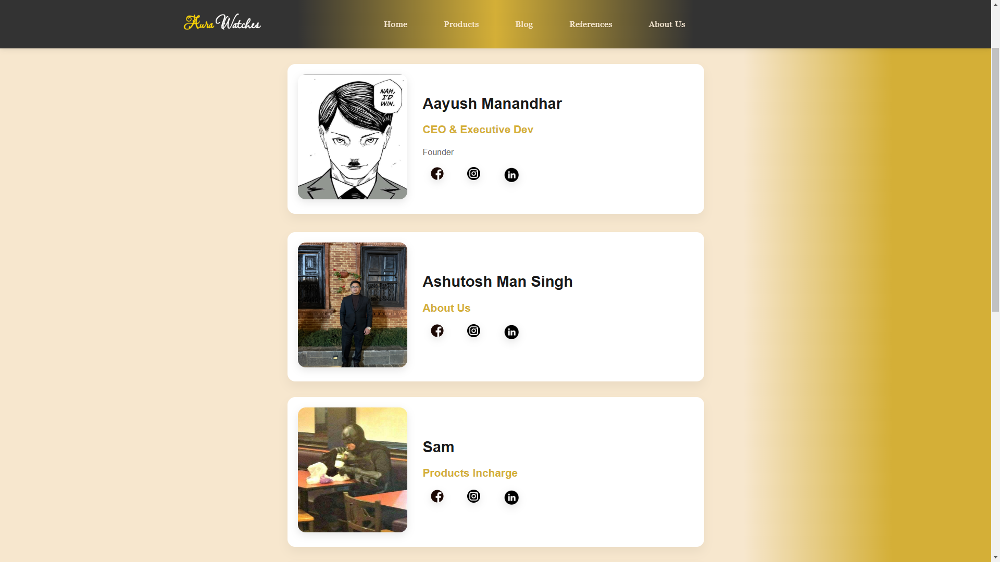
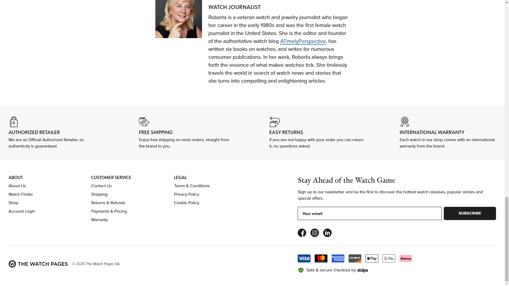
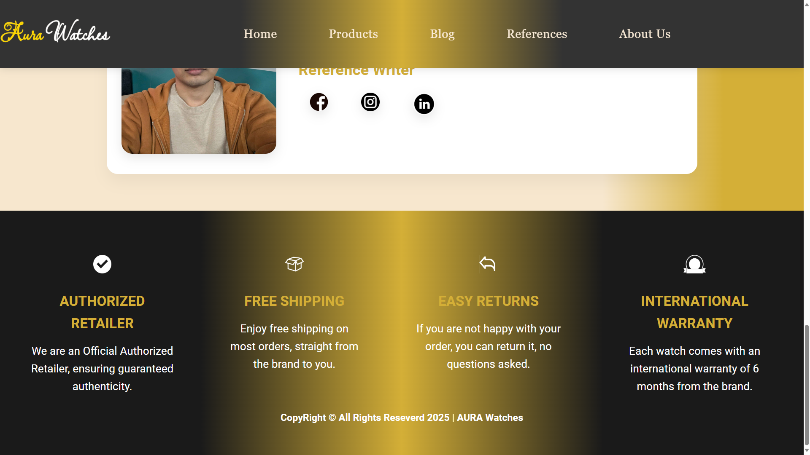

The elegant design blends refinement and simplicity, drawing inspiration from high-end watch companies such as Patek Philippe. We used a classic Patek Philippe reference number 5180/1R. The naked body of the watch and it's uniquness caught our eyes and we thought it would be an attracting factor of our website. We were also inspired from the clean website layout of Patek Philippe.

Aura Watches' home page creates the ideal atmosphere for an elegant and sophisticated user experience. We used a classic Patek Philippe and video slider of the watch to make the site engaging. Our home page is contrary from the reference website as we used a video slider of the watch that makes out site appealing. We also used more punchy colours and shades also trying to match the colour of the watch displayed. Visitors will be immediately drawn to the uniqueness and craftsmanship our business symbolizes thanks to the well-balanced use of space and high-quality pictures. It's the perfect display for a modern website with a luxury theme.

The product page's reference is also taken from Patek Philippe. Aura Watches' watch collection features watches from Audemars Piguet, Patek Philippe, and Richard Mille. We found the displaying style of the products inspiring from Patek Philippe and enhanced the design even more.

The product page design is notable for its simple layout and intuitive navigation. With high-quality photos and descriptions that showcase their qualities, this page lets the products take center stage, drawing inspiration from renowned watch collections like Audemars Piguet, Patek Philippe, and Richard Mille. Visitors will have an easy time using our collection thanks to the user-friendly design, which promotes a flawless buying experience. We also have an option to go through selective choice of brands of watches. The hovering used and sliding effect makes the website more interactive, smooth and fun to use.

The reference for blog page is taken from Omega Watches. Omega Watches' website was where we prmarily visited and we like the spacing and the navigations through different topics used in their website. We similarly took inspiration and we added topics related to technology and much more to read.

Our blog is an interesting way to interact with our audience, and it takes inspiration from Omega Watches' stories section. The impact of technology in the watch industry and the ongoing factors of great watchmaking are reflected in the rich storytelling experience offered by Aura Watches' blog page. The blog page skillfully combines information and images to attract visitors, whether it is offering news about various subjects related to watch or instructing people on trends of watch and ongoing topics.

The inspiration of about us page is taken from the site The Watch Pages where they have vertically aligned the description of their founders and we similarly took inspiration from it. We were allured by the spacing and ideology of the way they presented their founders.

Our "About Us" page is clean and engaging thanks to the perfect spacings and brief descriptions about the developers. The inspiration of this page is taken from the site The Watch Pages, where they've displayed information about their founders. Similarly, our "About Us" page highlights brief descriptions of our developers and gives a short idea of who we are from the protfolio. We also have provided information relating to social media details of our members.

Inspiration of the footer section is taken from The Watch Pages where they have mentioned how their site and business operates. We wanted to give a similar idea to our visitors so we used it as a reference.

The design of our footer section is inspired by the site The Watch Pages. It highlights some key features of our site such as authorized retailer information, free shipping, easy returns, and international warranties. These features make our website authentic and trustworthy. We were highly inspired by the unique yet strong impression that the footer gives about the site. The dark colours and and the catchy footer section is what makes it different.